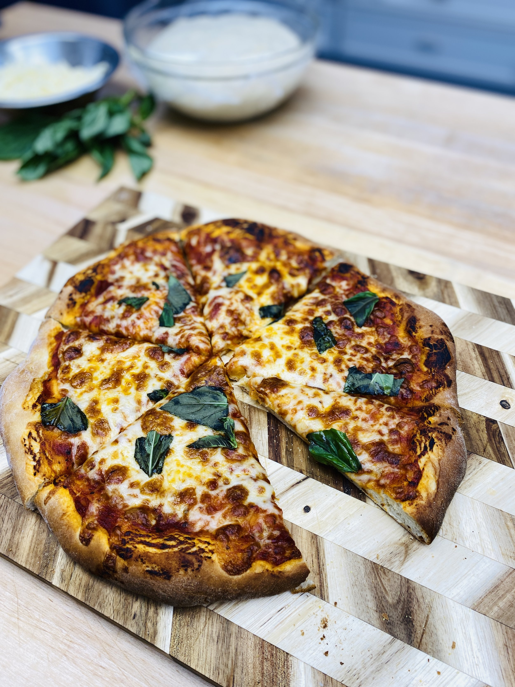

Homestyle Made Pizza Recipe

Ingredients:
- Pizza Dough:
- 2 1/4 teaspoons active dry yeast
- 1 1/2 cups warm water
- 1 teaspoon sugar
- 3 1/2 cups all-purpose flour
- 2 tablespoons olive oil
- 1 teaspoon salt
- Pizza Sauce:
- 1 (14.5-ounce) can crushed tomatoes
- 2 cloves garlic, minced
- 1 teaspoon dried oregano
- 1 teaspoon dried basil
- 1/2 teaspoon salt
- 1/2 teaspoon sugar
- Toppings:
- 2 cups shredded mozzarella cheese
- 1/2 cup sliced pepperoni (optional)
- 1/2 cup sliced mushrooms (optional)
- 1/4 cup sliced bell peppers (optional)
- 1/4 cup sliced onions (optional)
- Fresh basil leaves or dried basil (for garnish)
Instructions:
- Prepare the dough: In a small bowl, combine the yeast, warm water, and sugar. Let it sit for about 5 minutes until it becomes frothy. In a large bowl, combine the flour, olive oil, and salt. Add the yeast mixture to the flour mixture and mix until a dough forms. Knead the dough on a floured surface for 5-7 minutes until smooth. Place the dough in a lightly oiled bowl, cover, and let it rise for 1 hour or until doubled in size.
- Prepare the sauce: In a small saucepan, combine the crushed tomatoes, minced garlic, dried oregano, dried basil, salt, and sugar. Simmer over medium-low heat for 10 minutes. Adjust seasoning to taste.
- Preheat the oven: Preheat the oven to 475°F (245°C).
- Roll out the dough: On a lightly floured surface, roll out the dough into a round shape about 1/4 inch thick. Transfer the dough to a pizza stone or baking sheet lined with parchment paper.
- Assemble the pizza: Spread the prepared sauce evenly over the dough, leaving a small border around the edges. Sprinkle the shredded mozzarella cheese evenly over the sauce. Add the toppings of your choice, such as pepperoni, mushrooms, bell peppers, and onions.
- Bake the pizza: Place the pizza in the preheated oven and bake for 12-15 minutes or until the crust is golden brown and the cheese is bubbly and melted.
- Let it cool: Remove the pizza from the oven and let it cool for a few minutes before slicing.
- Garnish and serve: Garnish with fresh basil leaves or dried basil before serving. Enjoy your homemade pizza!
Enjoy your delicious homestyle made pizza!